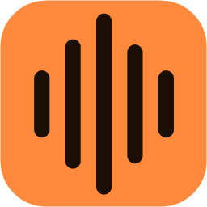

Vocyra
Soundboard gratuito para Windows: reproduce tus sonidos en Discord, juegos y llamadas, con atajos de teclado que funcionan dentro del juego.
- Sonidos ilimitados, con recorte, volumen y favoritos.
- Agrega audio, extrae el sonido de videos o graba lo que suena en tu PC.
- Repetición instantánea: guarda con un atajo lo último que sonó.
- Respaldo y sincronización opcionales con tu propio Google Drive.